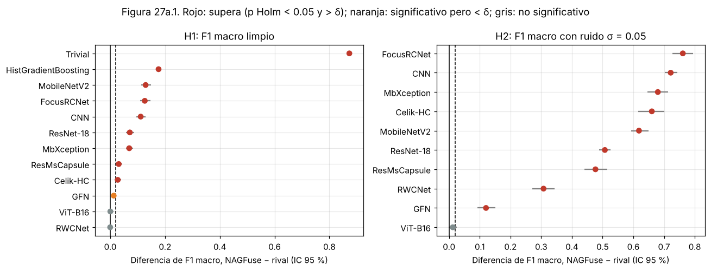
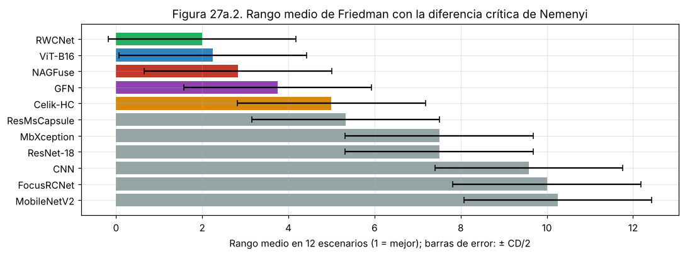

27a. Reproducción de las pruebas de hipótesis#
Este cuaderno regenera, desde las tablas congeladas de entregable3/resultados/, las tablas y figuras del
capítulo 27. Además recalcula la corrección de Holm a partir de los p-valores sin ajustar de cada prueba, para
comprobar que la decisión publicada sale del procedimiento preregistrado. Los p-valores sin ajustar los calculan
entregable3/analisis/estad.py (t pareada, Wilcoxon exacta, bootstrap jerárquico con 10 000 réplicas) y
confirmatorio.py; ejecutarlos de nuevo tarda unos 3 minutos y produce los mismos archivos byte a byte.
# Configuración común. El cuaderno funciona desde docs/ (Jupyter Book) o desde la raíz del repositorio.
from pathlib import Path
import pickle
import numpy as np
import pandas as pd
import matplotlib.pyplot as plt
REPO = next(p for p in [Path.cwd(), *Path.cwd().parents] if (p / "entregable3").is_dir())
RES = REPO / "entregable3" / "resultados" # tablas congeladas del análisis (hash SHA-256 en el capítulo 21)
RUNS = REPO / "entregable3" / "results" # corridas versionadas, sin pesos
CLASES = ["cardboard", "glass", "metal", "paper", "plastic", "trash"]
COLOR = {"NAGFuse": "#c0392b", "ViT-B16": "#2e86c1", "RWCNet": "#27ae60", "GFN": "#8e44ad", "Celik-HC": "#d68910"}
plt.rcParams.update({"axes.grid": True, "grid.alpha": 0.3, "font.size": 10})
pd.set_option("display.precision", 4)
print("Repositorio:", REPO.name)
Repositorio: deep-learning-colaborativo
# Holm–Bonferroni: p ajustado del i-ésimo menor p = max_{j<=i} min(1, (m − j + 1) p_(j))
def holm(p: np.ndarray) -> np.ndarray:
p = np.asarray(p, float); m = len(p); o = np.argsort(p)
ajust = np.minimum(1, np.maximum.accumulate((m - np.arange(m)) * p[o]))
out = np.empty(m); out[o] = ajust
return out
H1 = pd.read_csv(RES / "contrastes_H1_f1.csv") # familia de m = 12 rivales, F1 macro limpio
H2 = pd.read_csv(RES / "contrastes_H2_ruido005.csv") # familia de m = 10 rivales, F1 con ruido σ = 0.05
for nombre, t in [("H1", H1), ("H2", H2)]:
p_max = np.max([holm(t[c]) for c in ["p_t", "p_w", "p_boot"]], axis=0) # decisión: máximo de las tres pruebas
print(f"{nombre}: m = {len(t)}, máxima discrepancia con la tabla publicada = {np.abs(p_max - t.p_max_holm).max():.2e}")
assert np.allclose(p_max, t.p_max_holm), "La corrección de Holm no coincide"
H1: m = 12, máxima discrepancia con la tabla publicada = 2.17e-19
H2: m = 10, máxima discrepancia con la tabla publicada = 0.00e+00
# Tabla 27a.1: H1, F1 macro limpio. "Supera" exige p de Holm < 0.05, diferencia > δ = 0.02 y límite inferior del IC > 0
DELTA = 0.02
def tabla_contraste(t):
return pd.DataFrame({"rival": t.rival, "semillas": t.R, "diferencia": t.media_dif,
"IC 95 %": [f"[{a:+.4f}, {b:+.4f}]" for a, b in zip(t.ic_lo, t.ic_hi)],
"p t (Holm)": t.p_t_holm, "p Wilcoxon (Holm)": t.p_w_holm, "p bootstrap (Holm)": t.p_boot_holm,
"p máx.": t.p_max_holm, "Cliff δ": t.cliff, "d_z": t.dz,
"supera": (t.p_max_holm < 0.05) & (t.media_dif > DELTA) & (t.ic_lo > 0)}) \
.sort_values("diferencia").reset_index(drop=True)
T1 = tabla_contraste(H1)
assert (T1.supera.values == H1.sort_values("media_dif").supera.values).all() # mismo veredicto que la tabla congelada
T1
| rival | semillas | diferencia | IC 95 % | p t (Holm) | p Wilcoxon (Holm) | p bootstrap (Holm) | p máx. | Cliff δ | d_z | supera | |
|---|---|---|---|---|---|---|---|---|---|---|---|
| 0 | RWCNet | 20 | -0.0004 | [-0.0096, +0.0088] | 1.0000e+00 | 1.0000e+00 | 1.0000 | 1.0000 | -0.1 | -0.0276 | False |
| 1 | ViT-B16 | 20 | 0.0002 | [-0.0110, +0.0118] | 1.0000e+00 | 1.0000e+00 | 1.0000 | 1.0000 | 0.1 | 0.0089 | False |
| 2 | GFN | 20 | 0.0125 | [+0.0030, +0.0224] | 5.6495e-03 | 5.0697e-03 | 0.0426 | 0.0426 | 0.5 | 0.8063 | False |
| 3 | Celik-HC | 20 | 0.0272 | [+0.0168, +0.0392] | 9.2832e-06 | 3.8147e-05 | 0.0012 | 0.0012 | 0.9 | 1.4870 | True |
| 4 | ResMsCapsule | 20 | 0.0308 | [+0.0197, +0.0427] | 5.6761e-06 | 8.5831e-05 | 0.0012 | 0.0012 | 0.8 | 1.5664 | True |
| 5 | MbXception | 12 | 0.0692 | [+0.0566, +0.0832] | 3.1279e-09 | 3.9062e-03 | 0.0012 | 0.0039 | 1.0 | 6.0687 | True |
| 6 | ResNet-18 | 12 | 0.0713 | [+0.0572, +0.0870] | 8.6414e-08 | 3.9062e-03 | 0.0012 | 0.0039 | 1.0 | 4.2348 | True |
| 7 | CNN | 12 | 0.1110 | [+0.0956, +0.1283] | 5.1220e-09 | 3.9062e-03 | 0.0012 | 0.0039 | 1.0 | 5.7398 | True |
| 8 | FocusRCNet | 12 | 0.1260 | [+0.1088, +0.1462] | 1.6592e-08 | 3.9062e-03 | 0.0012 | 0.0039 | 1.0 | 5.0224 | True |
| 9 | MobileNetV2 | 12 | 0.1291 | [+0.1123, +0.1477] | 5.1220e-09 | 3.9062e-03 | 0.0012 | 0.0039 | 1.0 | 5.7325 | True |
| 10 | HistGradientBoosting | 20 | 0.1763 | [+0.1673, +0.1836] | 1.8628e-23 | 2.2888e-05 | 0.0012 | 0.0012 | 1.0 | 15.8520 | True |
| 11 | Trivial | 20 | 0.8729 | [+0.8639, +0.8802] | 1.3259e-36 | 2.2888e-05 | 0.0012 | 0.0012 | 1.0 | 78.4883 | True |
# Figura 27a.1: diferencias NAGFuse − rival con IC 95 % (H1 y H2)
fig, ejes = plt.subplots(1, 2, figsize=(12, 4.6))
for ax, t, tit in [(ejes[0], H1, "H1: F1 macro limpio"), (ejes[1], H2, "H2: F1 macro con ruido σ = 0.05")]:
t = t.sort_values("media_dif")
col = np.where(t.supera, "#c0392b", np.where(t.p_max_holm < 0.05, "#e67e22", "#7f8c8d"))
ax.errorbar(t.media_dif, t.rival, xerr=[t.media_dif - t.ic_lo, t.ic_hi - t.media_dif], fmt="none", ecolor="gray")
ax.scatter(t.media_dif, t.rival, c=col, zorder=3)
ax.axvline(0, color="black", lw=1); ax.axvline(DELTA, color="black", ls="--", lw=1)
ax.set_title(tit); ax.set_xlabel("Diferencia de F1 macro, NAGFuse − rival (IC 95 %)")
fig.suptitle("Figura 27a.1. Rojo: supera (p Holm < 0.05 y > δ); naranja: significativo pero < δ; gris: no significativo")
plt.tight_layout()

Interpretación. En datos limpios NAGFuse supera por más de δ a 9 de los 12 rivales. Frente a GFN la diferencia (+0.013) es menor que δ, y frente a RWCNet y ViT-B16 es prácticamente cero, con un intervalo que cruza el 0: H1 no se cumple. Con ruido σ = 0.05 la ventaja frente a las redes convolucionales es enorme, porque estas colapsan; frente a ViT-B16 la diferencia es pequeña y no significativa, porque con ruido fuerte la compuerta deja decidir precisamente a la rama ViT.
# Tabla 27a.2: sensibilidad del veredicto de H1 a la métrica (MCC) y al subconjunto de semillas (0–9)
MCC = pd.read_csv(RES / "contrastes_H1_mcc.csv").set_index("rival")
S09 = pd.read_csv(RES / "contrastes_H1_seeds0-9.csv").set_index("rival")
sens = pd.DataFrame({"F1, todas las semillas": H1.set_index("rival").supera, "MCC, todas las semillas": MCC.supera,
"F1, semillas 0–9": S09.supera})
sens["veredicto estable"] = sens.nunique(axis=1) == 1
sens
| F1, todas las semillas | MCC, todas las semillas | F1, semillas 0–9 | veredicto estable | |
|---|---|---|---|---|
| rival | ||||
| Celik-HC | True | True | False | False |
| MbXception | True | True | True | True |
| ViT-B16 | False | False | False | True |
| GFN | False | False | False | True |
| FocusRCNet | True | True | True | True |
| ResMsCapsule | True | True | True | True |
| RWCNet | False | False | False | True |
| CNN | True | True | True | True |
| MobileNetV2 | True | True | True | True |
| ResNet-18 | True | True | True | True |
| HistGradientBoosting | True | True | True | True |
| Trivial | True | True | True | True |
Sensibilidad. El veredicto es el mismo con las tres variantes para 11 de los 12 rivales. La excepción es Celik-HC: con solo las semillas 0–9 la diferencia sigue siendo significativa (p de Holm = 0.023), pero su media (+0.0199) queda justo por debajo de δ = 0.02. Esa superioridad es la más frágil de la familia.
# Tabla 27a.3: H3, no inferioridad (TOST) frente al mejor rival con margen δ = 0.02
pd.read_csv(RES / "H3_no_inferioridad.csv")
| mejor_rival | R | dif | ic90 | p_no_inferioridad | p_tost | |
|---|---|---|---|---|---|---|
| 0 | RWCNet | 20 | -0.0004 | (np.float64(-0.0062648807462045404), np.float64(0.005430708741436577)) | 7.0236e-06 | 7.0236e-06 |
# Figura 27a.2: comparación global (Friedman + Iman–Davenport + Nemenyi) sobre 12 escenarios
F = pd.read_csv(RES / "friedman_nemenyi.csv").sort_values("rango_medio")
print(f"χ²_F = {F.chi2.iloc[0]:.2f}, F_ID = {F.F_ID.iloc[0]:.2f}, p = {F.p.iloc[0]:.1e}, CD = {F.CD.iloc[0]:.2f}")
fig, ax = plt.subplots(figsize=(10, 3.8))
ax.barh(F.modelo, F.rango_medio, xerr=F.CD.iloc[0] / 2, color=[COLOR.get(m, "#95a5a6") for m in F.modelo],
error_kw=dict(ecolor="black", capsize=3))
ax.invert_yaxis(); ax.set_xlabel("Rango medio en 12 escenarios (1 = mejor); barras de error: ± CD/2")
ax.set_title("Figura 27a.2. Rango medio de Friedman con la diferencia crítica de Nemenyi")
plt.tight_layout()
χ²_F = 106.91, F_ID = 89.83, p = 3.5e-48, CD = 4.36

Interpretación. Dos modelos difieren significativamente según Nemenyi cuando sus rangos medios se separan más que la diferencia crítica CD (equivalentemente, cuando sus barras de ± CD/2 no se solapan). RWCNet (2.00), ViT-B16 (2.25), NAGFuse (2.83) y GFN (3.75) forman el grupo de cabeza y no se distinguen entre sí con CD = 4.36: la comparación global respalda un desempeño de primer nivel, no una superioridad.